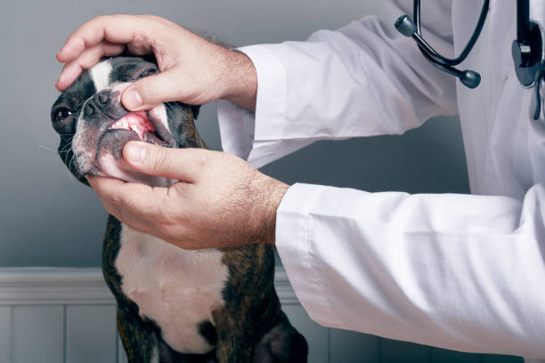
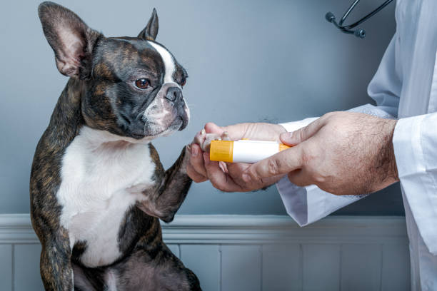

Hospital Veterinario Mundo Animal
¿Como podemos prevenir el asma?

No somos los únicos que podemos padecer esta patología. Muchas de nuestras mascotas también se pueden
ver afectadas por ciertos problemas en las vías respiratorias que les impidan respirar con normalidad
Además, el asma suele afectar principalmente a los perros alérgicos.
¡Conoce cómo puedes detectarla y ayúdale a prevenirla!.

El asma es una enfermedad respiratoria caracterizada por una inflamación crónica de los bronquios y
pulmones que provoca una falta de respiración. Y aunque afecta al 10% de los niños, también pueden
darse casos entre nuestras mascotas.
Los gatos, por ejemplo, suelen ser los más afectados debido a la exposición de varios elementos del
hogar como el humo del tabaco, el humo de las chimeneas, los aerosoles de productos de limpiezae
incluso la propia arena del arenero.
No obstante, al igual que los humanos, muchos animales también pueden tener asma a causa de las
alergias al polen, a los ácaros del polvo, a plantas o a ciertas comidas especiales.
¿Puede un perro tener asma?
La respuesta es sí, aunque es poco frecuente, afecta solo a 1 de cada millón de perros. La razón se
debe a su anatomía que es diferente a humanos y gatos, y es que tienen pulmones menos elásticos y no
sufren los espasmos en los bronquios que provocan el asma.
Por otro lado, el porcentaje de asma es mayor en el mundo felino, que afecta a un 10% de los gatos. Los
perros con síndrome braquicefálico o alérgicos suelen ser propensos a problemas respiratorios más
agudos y crónicos, pero esto no significa que tengan asma.
El asma tienen un factor genético que puede derivar del desarrollo deuna alergia respiratoria no
tratada convenientemente.
¿Qué produce el asma en perros?
Aunque se desconoce exactamente la causa, el asma se relaciona con una predisposición genética y
agentes externos ambientales(polvo, polen, humo, ácaros..).
Los bronquios del animal reaccionan al alérgeno, se cierran, se inflaman y bloquean con mucosidad
dificultando el paso de aire corriendo riesgo de asfixia.
El asma se diagnostica mediante análisis veterinariocon auscultación, radiografía de tórax y análisis de sangre.
Cuando se producen ataques esporádicos se pueden aplicar broncodilatores que se aplican con inhaladores como los que se utilizan con bebés para abrir los bronquios y facilitar el paso del aire, e incluso también se puede realizarla terapia de oxígeno que ayuda al perro a recuperarse más rápido del ataque de asma.
En casos de asma crónica con ataques habituales puede necesitar medicación de por vida, ya que en caso de no tratarse y más aún si padece cardiopatía, aumentará el riesgo de asfixia.
Pero siempre lo ideal es realizar untratamiento preventivoy evitar o reducir la causa que produce los ataques de asma.